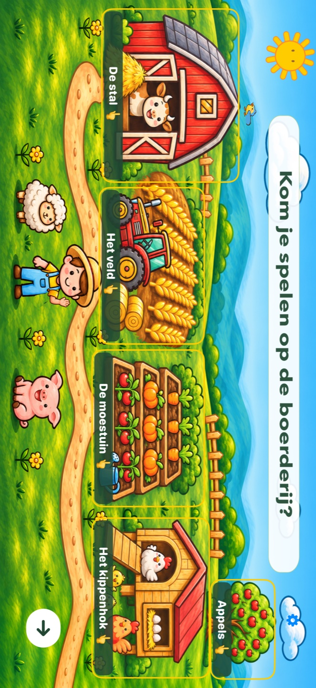
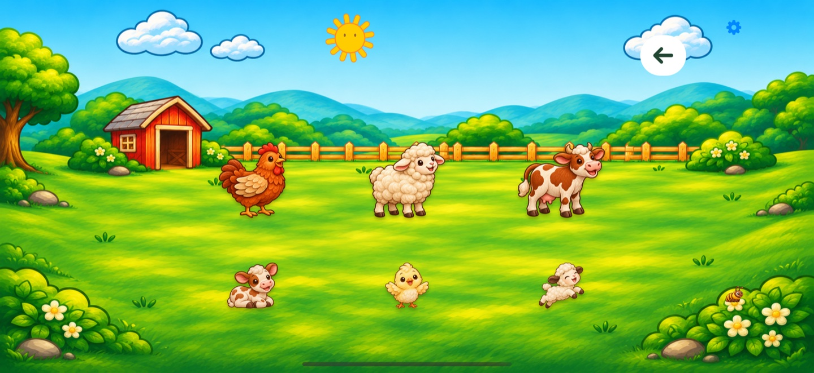

Met de tractor
Rijd over het veld en breng hooibalen naar de schuur.
Voor 3–5 jaar · iPhone en iPad
Voer de dieren, rijd met de tractor en help de eendjes oversteken. Elf boerderijspelletjes voor kinderen van 3 tot 5 jaar, in het Nederlands en Engels.
Bekijk de teaser
Rijd over het veld en breng hooibalen naar de schuur.

Kies wat elk dier graag eet, van hooi voor de koe tot een schaaltje melk voor de kat.

Verzorg de dieren met een spons, borstel of douche.

Luister naar een dierengeluid en tik op het dier dat erbij hoort.

Plant zaadjes, geef water en oogst groenten voor je mand.

Zoek de gevraagde witte of bruine eieren en hoor ze hardop tellen.

Schuif de mand onder vallende appels en geef de boom water.

Breng elk jong dier naar zijn ouder.

Zoek het konijntje op een van vijf verstopplekken.

Plaats de planken en tik de spijkers vast zodat de lammetjes door het hek kunnen.

Leg stapstenen in het water en help de eendjes oversteken.
Op Mijn Kleine Boerderij ontdekken kinderen van 3 tot 5 jaar elf spelletjes. Tik op de boerderijkaart om te spelen of veeg naar de oostkaart voor vier extra spellen.
Download de video (MOV)Alle spellen zijn meteen beschikbaar. Nederlandse en Engelse gesproken aanwijzingen helpen je kind op weg.
De spellen werken offline en bevatten geen advertenties, accounts, abonnementen of in-app aankopen.
Stel taal, gesproken aanwijzingen, spelgeluiden, muziek en diergeluiden apart in via het oudergedeelte.
De app bewaart taal- en geluidsvoorkeuren en voortgang van enkele spellen lokaal.